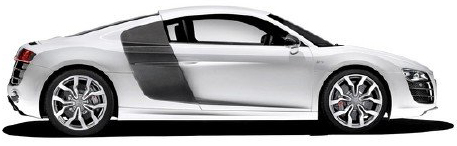

1. Искусственное мясо
5 августа 2013 года в Лондоне был представлен первый гамбургер, содержащий 140 грамм культивированного мяса. Оно было создано группой профессора Марка Поста из университета Маастрихта.
Бургер, на изготовление которого потребовалось два года и 325 тыс долл, состоял из 20 тыс тонких полос мышечной ткани коровы, выращенных в нидерландской лаборатории.
Повар Ричард Макгоун приготовил гамбургер перед телекамерами. Эксперты, диетолог Ханни Рутцер и автор исследований о будущем продуктов питания Джош Шонвальд посчитали, что мясо слишком сухое и обезжиренное.
2. Первая в истории посадка на поверхность кометы
Запущенный в 2004 году космический аппарат "Розетта" Европейского космического агентства в 2014 году приблизился к цели своей миссии — комете 67P/Чурюмова-Герасименко.
Затем спускаемый аппарат "Розетты" — "Филы" — совершил первую в истории мягкую посадку на поверхность кометы.
"Филы" должен был подойти к комете с относительной скоростью около 1 м/с и при контакте с поверхностью выпустить два гарпуна. Слабая гравитация кометы не способна удержать аппарат, он мог просто отскочить.
После посадки модуль занялся определением параметров ядра кометы, исследованием его химического состава и изучением активности кометы.
В 2014 году была опубликована статья 67P/Churyumov-Gerasimenko, a Jupiter family comet with a high D/H ratio. В ней было отмечено высокое, более чем в три раза по сравнению с земными океанами, содержание тяжелой воды во льду кометы. Этот результат противоречит принятой теории, что вода Земли имеет кометное происхождение.
3. Составлена рекордно подробная карта эпигенома человека
В 2015 году крупная международная коллаборация исследователей завершила проект картирования человеческого эпигенома, задачей которого было проанализировать 111 эталонных тканей организма. Результаты этой работы опубликованы в 20 отдельных статьях, вышедших в последнем номере Nature.
Почему это важно и что такое эпигеном? Эпигеном ("над геном") — совокупность меток, которые управляют чтением ДНК, но которые не меняют последовательности ДНК.
Эпигеном состоит из химических веществ и белков, которые могут присоединяться к ДНК и изменять ее функцию, включая и выключая гены. Окружающая среда и образ жизни человека — курение, еда — могут вызывать смертельные изменения в эпигеноме, которые способны вызывать рак.
Картирование эпигенома поможет ученым понять, как развиваются опухоли и распространяется рак.
4. Частный космический корабль пристыковался к МКС
В мае2012 года корабль Dragon, разработанный SpaceX , был пристыкован к модулю "Гармония" в рамках демонстрационной миссии SpaceX COTS Demo Flight 2/3. Dragon стал первым частным космическим кораблем, пристыкованным к Международной космической станции.
Ранее столь сложные технологии могли осваивать только государственные компании из США, России, Японии и стран ЕС.
Семь лет спустя SpaceX впервые запустила пилотируемую версию "Дракона" — Crew Dragon , но без экипажа в рамках демонстрационного полета.
5. Первая ступень ракеты совершила мягкую посадку
В 2015 году после запуска на орбиту 11 спутников Orbcomm-G2 первая ступень ракеты-носителя Falcon 9 FT впервые успешно приземлилась на площадку посадочной зоны 1.
После восстановления первая ступень была успешно запущена в космос в 2017 году.
6. Искусственный интеллект обыграл человека в стратегическую игру Go
В 2015 году программа AlphaGo, разработанная компанией Google DeepMind, выиграла матч у профессионального игрока на стандартной доске.
Эта победа ознаменовала собой важный прорыв в области ИИ: большинство специалистов по искусственному интеллекту считало, что подобная программа не будет создана ранее 2020 года.
В марте 2016 года программа выиграла со счетом 4:1 у профессионала высшего ранга Ли Седоля.
7. Создана синтетическая ДНК
Однако в 2017 году ученые изобрели две новые буквы, неестественную пару оснований X-Y, которые они интегрировали в генетический алфавит бактерий E. coli.
Флойд Ромесбург, который руководил исследованием, считает, что его изобретение может улучшить методы лечения болезней. Например, изобретение может изменить способ разложения белков в организме, помогая лекарствам дольше оставаться внутри человека.
Команда Ромесбурга размышляет, как сделанное открытие может помочь в лечении рака и создании лекарств от аутоиммунных заболеваний.
8. Автопилот для 
В сентябре 2017 года Audi объявила, что выпустила первый в мире автономный автомобиль "третьего уровня".
Это означает, что ноги, руки и глаза человека не нужны для управления машиной.
Седан A8 может передвигаться полностью автономно. Человек ему нужен только в случае плохой погоды или отсутствия дорожной разметки.
Для сравнения: водители Tesla с функцией Autopilot должны быть готовы в любой момент взять управление автомобилем в свои руки, поэтому им рекомендуется постоянно следить за дорогой.